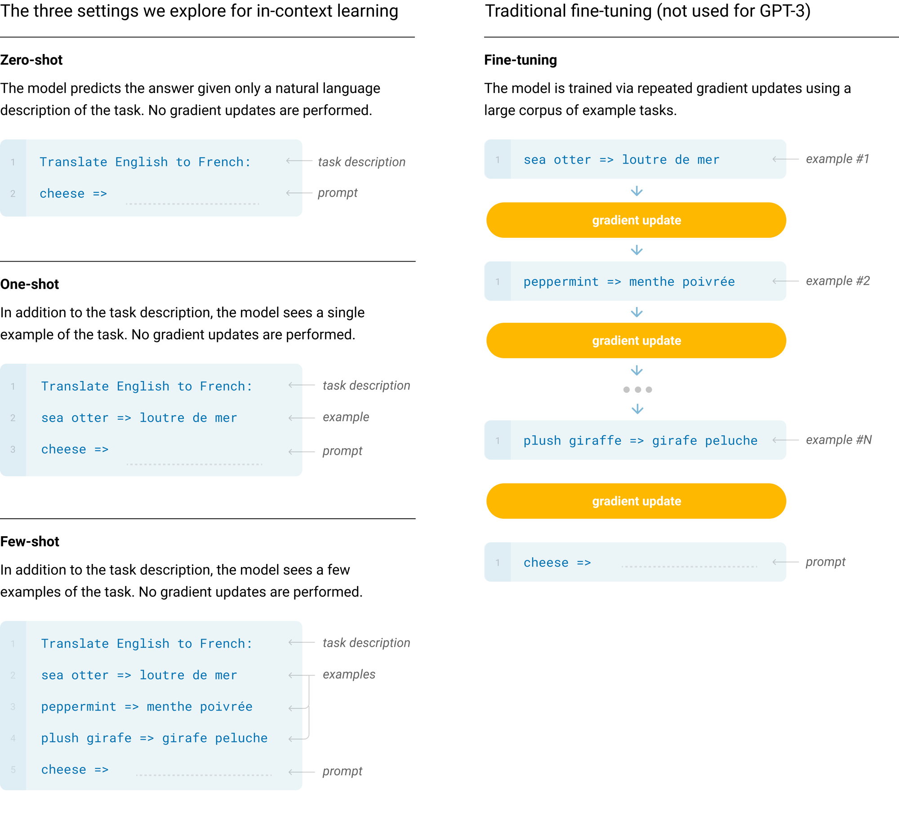

Cómo darle instrucciones claras a un modelo. Y cómo pedirle datos que un programa pueda leer y validar.
60 minutosClub de lectura al finalDespués: Laboratorio 3A
InstrucciónQué debe hacer
ContextoPara qué y para quién
EjemplosLa forma de la respuesta
FormatoUn JSON con su esquema
Apertura
En el Laboratorio 2B, la respuesta era texto
El notebook la lee
Categoría: fallo de la app | Prioridad: alta
Dice lo mismo, pero falla
La categoría es fallo de la app y la prioridad, alta.
Hoy le pides al modelo un registro con campos. Y lo validas con un esquema.
Apertura · El mapa de la sesión
El camino de un caso dentro de un programa
Parte 1 · Del chat a la API
Lo que agrega una app de chat
Parte 1 · Del chat a la API · Datos reales
Antes de tu mensaje, la app envía miles de tokens
Claude Haiku 3 · julio de 2024
155
Claude Haiku 3.5 · octubre de 2024
4 166
Claude Haiku 4.5 · noviembre de 2026
5 318
Claude Haiku 5.5 · noviembre de 2026
6 046
Tu pregunta: «¿Por qué se cierra la app al subir una foto?»
12
Método. Tokens contados con o200k_base sobre la entrada más reciente de cada modelo. Claude cuenta con su propio tokenizer. Anthropic publica una sola versión: la de los chats sin búsqueda web. No se aplica a la API.
Los ejemplos muestran la forma, y el modelo la imita
<ejemplos>
No puedo iniciar sesión desde el lunes. → cuenta y acceso, alta
Sería útil ordenar los álbumes por fecha. → solicitud de función, baja
La galería tarda diez segundos en abrir. → rendimiento, media
</ejemplos>
De tres a cinco. «Incluye de 3 a 5 ejemplos para obtener los mejores resultados».
Variados. Que cubran casos límite y no repitan un mismo patrón.
Separados. Dentro de etiquetas, para no confundirlos con la instrucción.
Zero-shot, one-shot y few-shot (Brown et al., 2020)

Zero-shot: solo la instrucción.
One-shot: la instrucción y un ejemplo.
Few-shot: la instrucción y varios ejemplos.
Los ejemplos van en el prompt. Los pesos no cambian.
Figura 2.1 de Brown et al. (2020), Language Models are Few-Shot Learners, NeurIPS. Licencia de arXiv, con derechos reservados: uso educativo con crédito.
Parte 3 · Formato de salida
Di exactamente cómo debe verse la respuesta
Responde solo con un JSON con los campos categoria,
prioridad, plataforma, version_app y resumen.
Si un dato no está en el ticket, escribe null.
<ticket>
Desde ayer la app se cierra cada vez que subo una foto…
</ticket>
El formato dice qué campos y qué hacer si falta un dato.
Las etiquetas separan la instrucción del ticket.
«Las etiquetas XML ayudan a Claude a analizar prompts complejos sin ambigüedad».
Schulhoff et al. (2024) revisaron 1 565 trabajos y ordenaron las técnicas en seis categorías.
Es un mapa para consultar, no una lista para aprender.
Sobre los ejemplos, el mismo informe dice que la ganancia puede estancarse pasados unos 20.
Schulhoff et al. (2024), The Prompt Report, versión 6 del 26 de febrero de 2025. Licencia CC BY 4.0.
Opcional · Demostración en vivo
Escribe un prompt y mira cuánto cuesta
Parte 4 · De texto libre a JSON
Un programa lee campos, no párrafos
Prosa
Parece un fallo de la app, bastante grave, en un Pixel con Android 15. Yo lo atendería pronto.
¿Dónde está la prioridad? ¿Qué significa «bastante grave»?
Registro
{"categoria": "fallo de la app",
"prioridad": "alta",
"plataforma": "Android"}
Cada campo tiene un nombre y un valor.
Con un registro, cada campo se puede probar: ¿la prioridad coincide con la esperada?
Parte 4 · De texto libre a JSON
El JSON en una diapositiva
{"categoria": "fallo de la app",
"intentos": 3,
"se_repite": true,
"pasos": ["Abrir la galería", "Subir la foto"],
"dispositivo": {"sistema": "Android", "version": 15}}
Texto, entre comillasNúmero, sin comillasVerdadero o falso: true o falseLista, entre corchetesUn objeto dentro de otro, entre llaves
Cada línea tiene una clave, dos puntos y un valor. Las llaves abren y cierran el registro.
Parte 4 · De texto libre a JSON
El esquema: los campos y sus reglas
Campo
Tipo
¿Obligatorio?
Valores permitidos
categoria
texto
sí
fallo de la app, rendimiento, interfaz, cuenta y acceso, solicitud de función
prioridad
texto
sí
alta, media, baja
plataforma
texto
sí
Android, iOS, web
version_app
texto o vacío
no
null si el ticket no la dice
resumen
texto
sí
una frase
class Ticket(BaseModel):
categoria: Literal["fallo de la app", "rendimiento", "interfaz", "cuenta y acceso", "solicitud de función"]
prioridad: Literal["alta", "media", "baja"]
plataforma: Literal["Android", "iOS", "web"]
version_app: str | None = None
resumen: str
El mismo esquema como clase de Pydantic 2.14. No tienes que escribirla: basta con reconocerla.
Parte 4 · De texto libre a JSON · Animación
Del texto al registro
Para explorar · El validador
Rompe el registro y mira qué detecta la validación
Parte 4 · De texto libre a JSON · Animación
Solo tokens válidos: la decodificación restringida
Parte 4 · De texto libre a JSON
Qué garantiza cada proveedor
Proveedor
Cómo se pide
¿Garantiza el esquema?
Lo que no garantiza
Claude
output_config.format con json_schema. Estable desde enero de 2026
Sí, con decodificación restringida, «in most cases»
Un rechazo, un corte por max_tokens o las mayúsculas de un valor permitido
Gemini
response_mime_type y response_json_schema
Sí: un JSON válido que cumple el esquema
«does not guarantee the values are semantically correct». Ignora las reglas que no admite
OpenAI
strict: true. Desde agosto de 2024
Sí, con una gramática que deja en cero los tokens inválidos
Un rechazo, un corte por max_tokens y los errores dentro de los valores
Los tres garantizan la forma, con excepciones. Ninguno garantiza el contenido.
Documentación de Anthropic y de Google, y anuncio de OpenAI (2024). Consulta: 24 de noviembre de 2026. Los logotipos solo identifican cada producto.
Parte 4 · De texto libre a JSON · Un dato con fecha y método
Pedir JSON en el prompt no basta
gpt-4-0613, un modelo de 2023
< 40 %
gpt-4o-2024-08-06, sin la restricción
93 %
gpt-4o-2024-08-06, con salidas estructuradas
100 %
Método. Es una prueba del propio proveedor, con esquemas JSON complejos, de agosto de 2024. Mide si la salida cumple el esquema, no si sus valores son correctos.
{"categoria": "fallo de la app",
"prioridad": "baja",
"plataforma": "Android"}
✓ Cumple el esquema: «baja» es un valor permitido.
✗ Pero está mal: un cierre de la app es prioridad alta.
Por eso el Laboratorio 3A mide dos cosas: las salidas válidas y los campos correctos.
Parte 4 · De texto libre a JSON · Cómo se ve en el código
En LangChain: with_structured_output
lector = modelo.with_structured_output(
Ticket, method="json_schema", include_raw=True)
respuesta = lector.invoke(mensajes)
respuesta["raw"] # el mensaje crudo del modelo
respuesta["parsed"] # el registro, o None si falló
respuesta["parsing_error"] # el error al leer la respuesta
Un error real de Pydantic
1 validation error for Ticket
prioridad
Input should be 'alta', 'media'
or 'baja' [type=literal_error,
input_value='urgente', input_type=str]
La sección 2 de la ficha del agente tiene cuatro partes:
El prompt de sistema
El esquema de la salida
Los resultados de la validación
Los casos de robustez
Parte 5 · La capa 2, parte 1 · En grupo
La consigna de la parte 1
El prompt de sistema, con las cinco piezas de la parte 3.
El esquema de la salida: cada campo con su tipo y si es obligatorio.
El registro esperado de cada uno de los diez casos de la capa 1.
Tres casos de robustez, con su resultado esperado.
Todavía no se corre nada: eso es la parte 2, después del bloque 3.2.
Parte 5 · La capa 2, parte 1
Tres casos de robustez
Entrada incompleta
«La app falla.»
Sin plataforma ni versión. Los campos opcionales quedan vacíos.
Respuesta mal formada
Un JSON cortado o con un valor no permitido.
La validación la detecta y el programa reintenta.
Fuera de alcance
«¿Cuánto cuesta el plan premium?»
No es un reporte. Prevé una salida para eso, por ejemplo una categoría «fuera de alcance».
El esquema no pide datos personales: ni nombres, ni correos, ni teléfonos (Anexo C.7).
Parte 5 · La capa 2
La capa 2 en dos partes
Después de este bloque
Parte 1
El prompt, el esquema y los registros esperados.
Después del bloque 3.2
Parte 2
Conectar por API, correr las pruebas y registrar.
Al inicio del bloque 4.1
Entrega
La sección 2 de la ficha y el código de la capa.
Cierre
El bloque 3.1 en tres ideas
1
El criterio primero
Los casos y su prueba van antes del prompt. Y no cambian.
2
Un prompt con piezas
Instrucción clara, contexto, sistema y usuario, ejemplos y formato.
3
Un esquema que se valida
El formato se puede garantizar. El contenido se prueba.
Después del club · 60 minutos en clase
Laboratorio 3A: del chat a la API con salidas estructuradas
Practicas convertir un texto libre en un registro JSON que cumple un esquema. Usas tickets de soporte de una app ficticia.
Configuras los campos del esquema (nombre, tipo y si es obligatorio) y la instrucción de sistema.
Mides el porcentaje de salidas válidas, el de campos correctos, los tokens y el costo.
No escribes código a mano: lees, ejecutas y configuras.
Sin clave de API, el notebook usa respuestas grabadas. Con la clave del curso, corre en vivo.
El notebook trae sus pruebas de funcionamiento y de robustez.
Club de lectura · 5 minutos
Club de lectura: Meincke et al. (2025)
Prompting Science Report 2: The Decreasing Value of Chain of Thought in Prompting. Página del informe · arXiv
¿Cómo sabes si un prompt funciona? El informe mide el éxito de varias maneras: acertar 25 de 25 veces, 23 de 25 o la mayoría. ¿Por qué no basta con el promedio de aciertos? ¿Qué medida usarías para decidir si tu agente está listo? Apóyate en la sección «How we Benchmark the AI».
¿Pensar paso a paso vale lo que cuesta? Los autores pidieron a varios modelos razonar paso a paso antes de responder. Compararon los aciertos, el tiempo y los tokens. ¿Qué medirías en tus propios casos antes de pedirle a tu agente que razone? Apóyate en la discusión y en las limitaciones que reconocen los autores.
Después del club: Laboratorio 3A.
Para profundizar
Referencias
Meincke, Mollick, Mollick y Shapiro (2025, 8 de junio). Prompting Science Report 2: The Decreasing Value of Chain of Thought in Prompting. Wharton Generative AI Labs. gail.wharton.upenn.edu · arxiv.org
Brown et al. (2020). Language Models are Few-Shot Learners. NeurIPS. arxiv.org
Schulhoff et al. (2024). The Prompt Report: A Systematic Survey of Prompt Engineering Techniques. arxiv.org
Zheng et al. (2024). When “A Helpful Assistant” Is Not Really Helpful: Personas in System Prompts Do Not Improve Performances of Large Language Models. Findings of EMNLP. arxiv.org
OpenAI (2024, 6 de agosto). Introducing Structured Outputs in the API. Original · en español